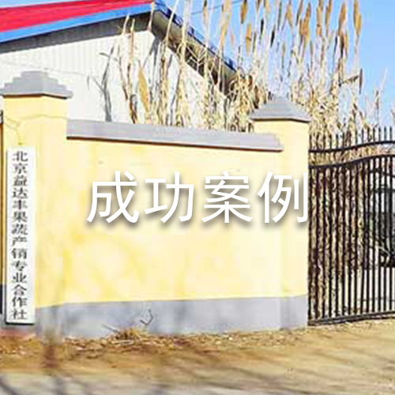

-
透明云介绍
农产品质量安全事关人民群众身体健康和生命安全。透明云农场旨在解决农产品质量安全问题，从源头抓起。通过建立从产地到市场的全程质量控制系统和追溯体系，对农产品产地环境、生产过程、产品检测、包装盒标识等关键环节进行监督管理，切实保障农产品的质量安全。一旦农产品出现问题时，可直接追究责任人和监管部门的责任。
-
行业背景
♦ 北京所围绕“农产品标准化”和“农产品信息追溯”应用中的关键性技术问题，致力于开发一套符合农产品标准与信息查询服务的系统平台，以信息化与互联网技术推动供销合作社传统业务的“智慧化”升级, 力求突出特色，推动“透明云农场”在供销合作社业务领域的应用。有效提高供销合作社为农服务的规模、质量与效率。 ♦ 中华全国供销合作总社是全国供销合作社的联合组织，由国务院领导。中华全国供销合作总社设立理事会、监事会，实行理事会主任负责制。目前，中华全国供销合作总社理事会内设机构14个，监事会内设机构1个，下辖15个直属事业单位、15家主管社团和中国供销集团，中国供销集团管理有全资和控股子公司16家。
-
竞争优势
北京所设有农业标准化与合格评定技术研究中心，该中心为供销合作社农业标准化提供政策咨询和技术开发。另外，北京所下属北京中合金诺认证中心有限公司是经国家认证认可监督管理委员会批准的专注于农产品认证与标准化研究的第三方机构。北京所发挥在农业标准化领域的科研优势，整合有效资源，为标准化农业生产管理提供坚实的基础支撑。
-
基础服务
项目搭建硬件信息采集系统、物联网传感系统、视频监控系统、生产信息管理系统、农产品质量安全溯源系统。在功能上是面对企业、消费者，政府三位一体的综合性平台。面向企业提供标准的有机农产品管理流程和精细化农业服务，面向大众消费者提供产品质量溯源与信息服务，面向政府提供检测与溯源数据采集平台等，充分发挥了供销社完善的全国范围体系优势，最终达到“质量可监控，过程可追溯，政府可监管”的效果。
-

成功案例
♦ 2016年4月北京市平谷益达丰果蔬专业合作社投放运用，助力地方农业转型发展。
♦ 2016年6月与重庆市江津区农民合作社服务中心有限公司签订了战略合作协议。
♦ 2016年12月重庆江津有机水稻基地实施项目。